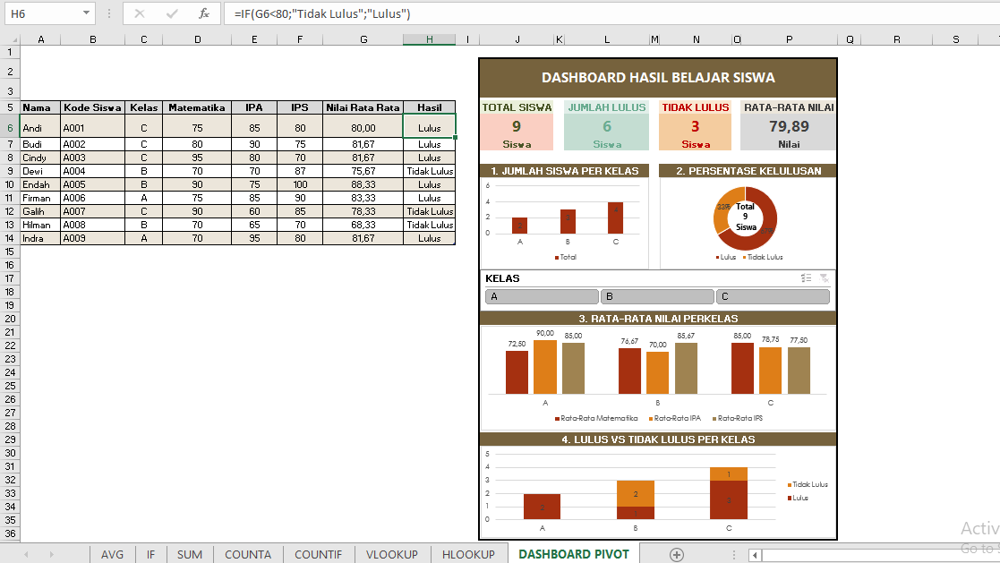

Administrative
Data Hasil Belajar Siswa (Microsoft Excel)
Workbook administrasi nilai siswa menggunakan rumus, PivotTable, dan fitur administrasi lainnya.
Lihat Detail →Administrative
Workbook Microsoft Excel untuk latihan mandiri pembuatan slip gaji karyawan, mencakup perhitungan gaji pokok, tunjangan, potongan, hingga total gaji.
Project Overview
Proses pembuatan slip gaji memerlukan perhitungan yang akurat agar setiap komponen penghasilan dan potongan dapat dihitung secara konsisten. Workbook ini dikembangkan untuk mengotomatisasi proses tersebut menggunakan Microsoft Excel.
Workbook ini bertujuan untuk menyusun slip gaji secara otomatis melalui penerapan rumus Excel sehingga proses administrasi penggajian menjadi lebih cepat dan akurat.
Task / Use Case
Ringkasan singkat skenario penggunaan yang diselesaikan pada workbook slip gaji ini.
Process / Workflow
Memasukkan informasi karyawan beserta komponen penggajian yang diperlukan.
Mengolah gaji pokok, tunjangan, potongan, pajak, dan total gaji menggunakan formula Excel.
Menyusun slip gaji otomatis berdasarkan hasil perhitungan tunjangan dan potongan.
Workbook Preview
Key Features
Skills & Tools
Related Projects
Tertarik melihat project lainnya? Jelajahi seluruh portofolio data analytics, riset, dan visual communication saya.
← Kembali ke Portfolio